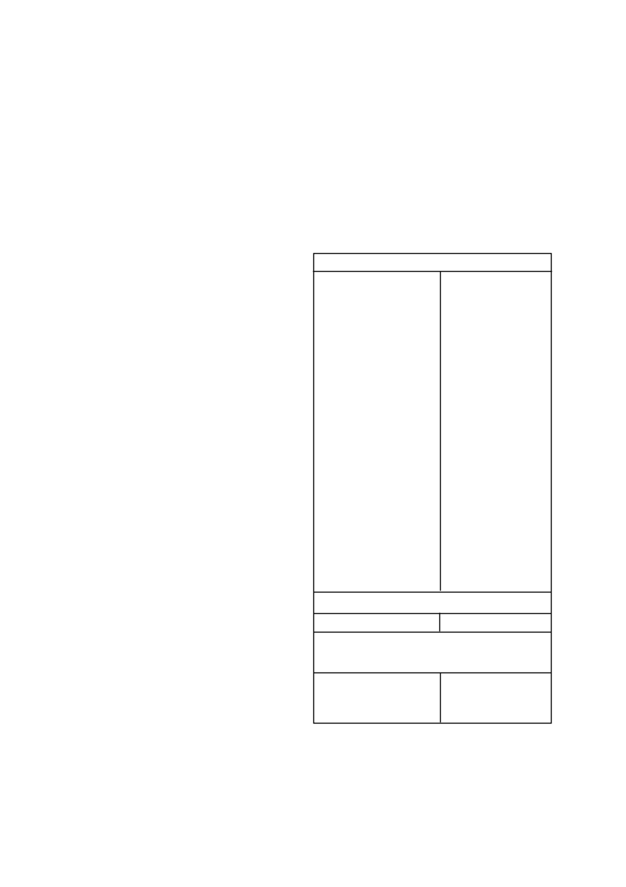

GESAPRIM SUPER
/ 2
•
The above mentioned waiting periods are valid only if the cor-
rect dosage rate of
GESAPRIM SUPER
according to soil type
was applied and normal or above average rainfall occurred
after
GESAPRIM SUPER
application.
•
When
GESAPRIM SUPER
is applied to soils which expand
on wetting and crack or crumble on drying out, such as turf
soils,
GESAPRIM SUPER
may remain active in the soil for
much longer than the above mentioned waiting periods.
Thus
GESAPRIM SUPER
should not be used on such soils if sensi-
tive crops might be planted in the foreseeable future. On such
soils
GESAPRIM SUPER
may also give poor control of the
weeds when applied as a pre-emergence treatment.
•
Do not apply
GESAPRIM SUPER
onto poorly drained soils or
soils with a compaction layer, since this can cause damage to
triazine sensitive crops under waterlogged conditions.
•
Do not apply
GESAPRIM SUPER
to inbred parent plants
of maize and sorghum hybrids or to experimental or newly
released maize or sorghum cultivars without first consulting the
Syngenta representative/agent or seed supplier.
•
For optimal results with
GESAPRIM SUPER
, approximately
10 - 20 mm of rain or irrigation is required for activation of the
product. If there is no rain for more than two weeks, certain
weeds will germinate and consequently, control will be poor or
erratic.
•
Due to the low adsorption capacity of sandy soils (0 - 15%
clay), the herbicide present can drop to sub lethal levels within
the upper 50 mm of the soil profile after soaking rains (>25
mm per day) with a subsequent reduction in weed control.
Continuous rains (> 50 mm spread over 3 - 7 days) will also
lead to reduced weed control and possible crop damage.
•
Do not apply
GESAPRIM SUPER
under stress conditions,
e.g. waterlogged conditions, drought, extremely cold condi-
tions, excessive rain, poor fertilizer application, low pH etc.
Application under these conditions will result in poor weed
control and possibly crop damage.
•
Fields that have been burned, must first be well cultivated
before applying
GESAPRIM SUPER
. Ash on the soil surface
can lead to inactivation of the applied herbicides with subse-
quent poor control.
•
Due to the translocation of treated topsoil and leaching of
GESAPRIM SUPER
on sandy soils, sub optimal weed control
may result under flood irrigation.
•
Under abnormal climatic conditions, such as excessive rain
followed by long periods of cloudy weather shortly after plant-
ing, can cause crop damage when applications are made early
post emergence (1 - 3 leaf stage of the crop).
•
If GRAMOXONE
(L1174) is added to the spray mixture the fol-
lowing conditions should be avoided:
a) Maize under physiological stress.
b) Maize with low yield potential.
c) Windy conditions.
d) Fields with uneven surfaces.
Warning: Possible damage to triazine sensitive crops
•
Where soils have been treated with lime to correct the soil pH,
the possibility of crop damage increases dramatically in fields
where triazines were previously applied. This is due to the
triazine molecules being replaced on the clay complex with
calcium cations and the triazine thus becoming more available
in the soil-water complex.
•
Only maize should be planted in the season directly after soil
pH adjustment with lime.
•
No triazine sensitive crops should be planted in the season
after the soil pH adjustment has been done with lime. This
applies even if triazines were used at crop rotation rates in
previous years.
•
Triazine sensitive crops include all broadleaf crops e.g. diffe-
rent bean crops, sunflowers and all cereals e.g. wheat.
•
These warnings however do not guarantee that no damage
would be experienced to even the following maize crop as
large volumes of previously applied triazines might now be
available depending on the volume of lime applied and the
rainfall experienced.
Warning: Possible increased efficacy, phytotoxicity and
residual action
•
Increasing the soil pH levels above 7 could produce conditions
for increased efficacy and reduced selectivity. This increased
pH may also result in increased soil residual action by certain
herbicides influencing the choice of following crops especially
under irrigation.
•
In situations where pH adjustments has been done, take
care when sulphonyl urea herbicides, triazolopyrimidine sulfo-
nanilide herbicides and imidazolinone herbicides, which are all
sensitive to soil pH fluctuations, have been used or are about
to be used.
Contact your local SYNGENTA representative to discuss
crop rotation and crop protection programmes to follow
before embarking on any pH adjustment programme.
5. WEEDS CONTROLLED
The following weed species are normally controlled by an appli-
cation of
GESAPRIM SUPER
at the dosage rates as indicated
below:
Broadleaf weeds
Acanthospermum australe
eight-seeded prostate
starbur
Acanthospermum glabratum
five-seeded prostrate
starbur
Acanthospermum hispisdum
upright starbur
Amaranthus deflexus
perennial pigweed
Amaranthus hybridus
common pigweed
Amaranthus spinosus
thorny pigweed
Amaranthus thunbergii
red pigweed
Bidens bipinnata
Spanish blackjack
Bidens pilosa
blackjack
Chenopodium album
white goosefoot
Chenopodium carinatum
green goosefoot
Cleome monophylla
spindlepod
Cleome rubella
pretty lady
Commelina benghalensis
wandering Jew
Cosmos bipinnatus
cosmos
Crotalaria sphaerocarpa
mealie Crotalaria
Datura ferox
large thorn apple
Datura stramonium
thorn apple
Galinsoga parviflora
gallant soldier
Gisekia pharnaceoides
Gisekia
Hibiscus cannabinus
kenaf
Hibiscus trionum
bladderweed
Nicandra physaloides
Apple of Peru
Physalis angulata
wild gooseberry
Portulaca oleracea
purslane
Richardia brasiliensis
tropical Richardia
Schkuhria pinnata
dwarf marigold
Tagetes minuta
khaki weed
Vigna vexillata
wild cow-pea
Grasses
Eleusine indica
goose grass
If dry conditions prevail for a period of 7 to 14 days after pre-
emergence application the following weed species may not be
adequately controlled, especially on heavy soils.
Commelina benghalensis
Bengal wandering Jew
Cosmos bipinnatus
cosmos
Datura
spp
.
thorn apple
Eleusine indica
goose grass
6. DIRECTIONS FOR USE
Use only as recommended
6.1
COMPATIBILITY
The compatibility of
GESAPRIM SUPER
with other products
may be influenced by the formulation of the products involved as
well as the quality of the water.
Since the formulation of other
products may change without the knowledge of Syngenta and
the quality of water may vary from farm to farm, a physical com-
patibility test should always be carried out prior to application.
GESAPRIM SUPER
is compatible with COMPLEMENT SUPER
(L8169), DUAL
®
GOLD (L3612), GRAMOXONE
®
(L1174) and
